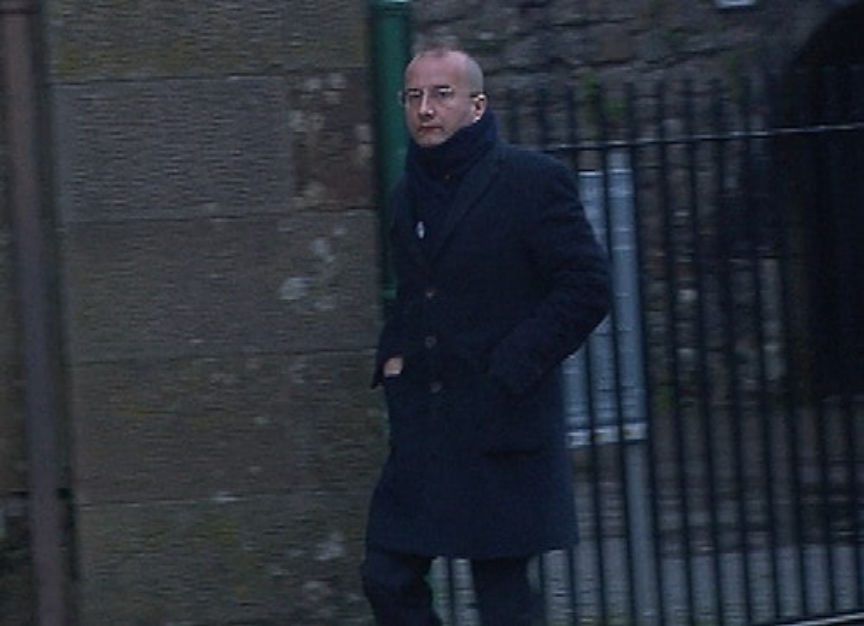
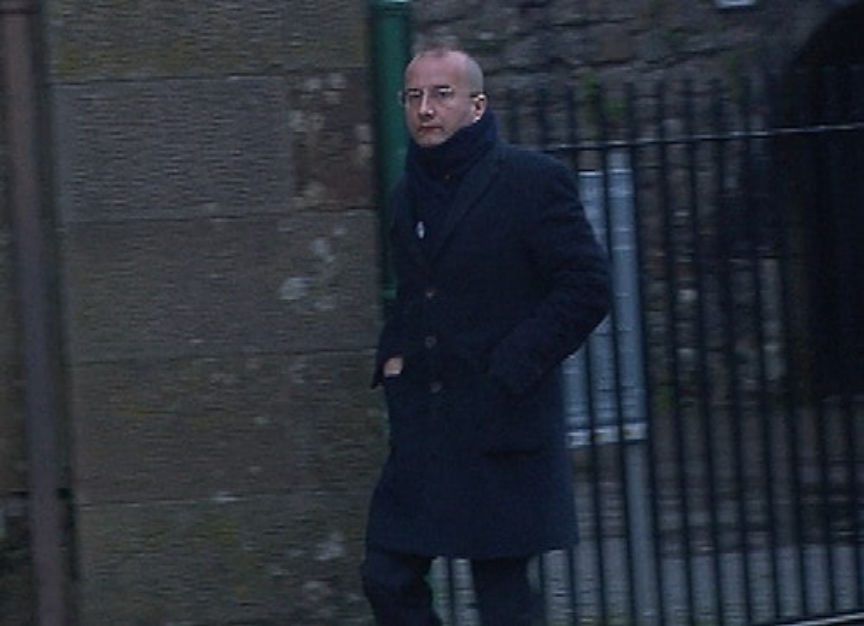

Man Avoids Prison in Darkweb Child Porn Case
~3 min read | Published on 2019-12-12, tagged Child-Porn, Sentenced using 521 words.
A Polish man residing in Ireland was sentenced to three years in prison suspended after he pleaded guilty to possession of hundreds of child pornography images. The defendant downloaded the images from a now-defunct dark web child pornography site.
According to reports, Wojciech Odrobina of Prospect Woods in Longford was arrested and charged in August 2013 as a result of a darkweb investigation by German law enforcement. The investigation resulted in the takedown a darkweb child pornography site that allowed its users to share and download child abuse images. During the investigation, German authorities recovered IP addresses of some of the users of the site. They sent the IP addresses to law enforcement agencies across the globe.
The Irish Gardaí received an IP address that on subsequent investigation led them to Odrobina’s apartment in Co Roscommon. They executed a search warrant on August 12, 2013 at the apartment. The apartment was unoccupied at the time of the raid. The investigators found and seized a laptop and several hard disks. On August 28, Odrobina returned to his apartment and reported to the Gardai that someone had broken into it. Odrobina then went to the police station where the authorities informed him of the investigation. He agreed to questioning and later handed over the passwords to the seized drives and devices.
During analysis of the recovered hard drives, investigators found a “large number” of child abuse images, some were of “an extreme nature.” They also found software used by Odrobina to view and then delete the images from his hard drives.
Odrobina was later arrested and taken to the Longford Garda Station where authorities questioned him again. During the questioning Odrobina admitted that he had downloaded 847 child pornography images—the ones found on his devices—and the authorities charged him with possession of child pornography. In the plea hearing, the court heard that Odrobina had married and had two children. He also held a job at an architecture firm. His interest in child abuse images allegedly originated from a tough childhood, he told the court. He also told the court that his sister’s death in 2012—one year before the investigation into the darkweb child abuse site—had “destabilized him.”
On December 11, Odrobina appeared before Judge John Aylmer in the Donegal Circuit Court for his sentencing hearing. Judge Aylmer acknowledged that the defendant had cooperated with law enforcement and that Odrobina had no previous convictions. He also appreciated the fact that Odrobina had completed rehabilitation in connection with the child pornography addiction.
The judge sentenced the man to three years suspended sentence, largely due to the findings of the Irish Child and Family Agency (TULSA) about Odrobina’s risk to the community. They found that the man posed no risk to his family or others. The suspended sentence is contingent upon several conditions meant to prevent his ability to access children under 18 as well as his ability to access child pornography through electronic devices. During the suspended sentence, authorities must be able to conduct inspections of Odrobina’s electronic devices. The judge ordered Odrobina to comply with all other requirements of the Sex Offenders act.
According to reports, Wojciech Odrobina of Prospect Woods in Longford was arrested and charged in August 2013 as a result of a darkweb investigation by German law enforcement. The investigation resulted in the takedown a darkweb child pornography site that allowed its users to share and download child abuse images. During the investigation, German authorities recovered IP addresses of some of the users of the site. They sent the IP addresses to law enforcement agencies across the globe.
The Irish Gardaí received an IP address that on subsequent investigation led them to Odrobina’s apartment in Co Roscommon. They executed a search warrant on August 12, 2013 at the apartment. The apartment was unoccupied at the time of the raid. The investigators found and seized a laptop and several hard disks. On August 28, Odrobina returned to his apartment and reported to the Gardai that someone had broken into it. Odrobina then went to the police station where the authorities informed him of the investigation. He agreed to questioning and later handed over the passwords to the seized drives and devices.
Odrobina Admitted Possession of Child Pornography | RTE
During analysis of the recovered hard drives, investigators found a “large number” of child abuse images, some were of “an extreme nature.” They also found software used by Odrobina to view and then delete the images from his hard drives.
Odrobina was later arrested and taken to the Longford Garda Station where authorities questioned him again. During the questioning Odrobina admitted that he had downloaded 847 child pornography images—the ones found on his devices—and the authorities charged him with possession of child pornography. In the plea hearing, the court heard that Odrobina had married and had two children. He also held a job at an architecture firm. His interest in child abuse images allegedly originated from a tough childhood, he told the court. He also told the court that his sister’s death in 2012—one year before the investigation into the darkweb child abuse site—had “destabilized him.”
On December 11, Odrobina appeared before Judge John Aylmer in the Donegal Circuit Court for his sentencing hearing. Judge Aylmer acknowledged that the defendant had cooperated with law enforcement and that Odrobina had no previous convictions. He also appreciated the fact that Odrobina had completed rehabilitation in connection with the child pornography addiction.
The judge sentenced the man to three years suspended sentence, largely due to the findings of the Irish Child and Family Agency (TULSA) about Odrobina’s risk to the community. They found that the man posed no risk to his family or others. The suspended sentence is contingent upon several conditions meant to prevent his ability to access children under 18 as well as his ability to access child pornography through electronic devices. During the suspended sentence, authorities must be able to conduct inspections of Odrobina’s electronic devices. The judge ordered Odrobina to comply with all other requirements of the Sex Offenders act.